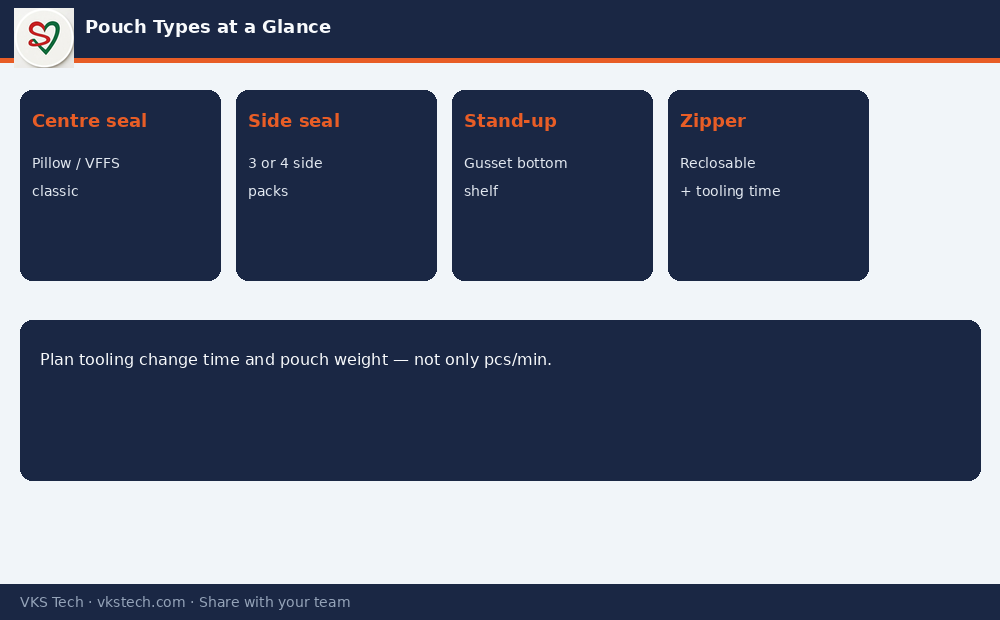

📦 Pouching Is Where Converting Becomes a Consumer Pack. Wrong Tooling or Seal Recipe Turns Good Film into Scrap at the Last Step.
📖 9-min read · Pouching · PPC + Production
After print, laminate and slit, the film still has to become a pouch the filler or brand can use. Centre-seal, side-seal, stand-up, zipper — each type has different tooling, speed and failure modes. PPC needs to know which machine can run which structure and how long changeovers really take.
📌 Common Pouch Families
- Centre seal — classic pillow / VFFS style
- Side seal — three-side or four-side seal packs
- Stand-up / gusset — bottom gusset for shelf presence
- Zipper / reclosable — added convenience, extra tooling time
- Typical speed: often 60–150 pouches/min depending on size and machine

What PPC Must Plan
- Which machine can run this structure and width
- Tooling / zipper change time (often underestimated)
- Seal temperature and dwell by film structure
- Average pouch weight for capacity in MT (not only pieces)
💡 Planning truth: Counting only “pouches per minute” without changeover and weight gives a false capacity number. Later in this series we convert all of this into MT.
Next → How to Calculate Wastage % in a Converting Plant
📦 पाउचिंग वह जगह है जहाँ कन्वर्टिंग उपभोक्ता पैक बन जाता है। गलत टूलिंग या सील रेसिपी अच्छी फिल्म को आखिरी स्टेप पर स्क्रैप बना देती है।
📖 9-मिनट पढ़ें · पाउचिंग · PPC + प्रोडक्शन
सेंटर सील, साइड सील, स्टैंड-अप, जिपर — हर प्रकार की अलग टूलिंग, स्पीड और फेल्योर मोड होती है। PPC को जानना चाहिए कौन सी मशीन कौन सा स्ट्रक्चर चला सकती है और चेंजओवर वास्तव में कितना समय लेता है।
💡 प्लानिंग सच्चाई: सिर्फ “पाउच प्रति मिनट” गिनना बिना चेंजओवर और वजन के झूठी क्षमता देता है।
अगला → वेस्टेज % कैसे निकालें